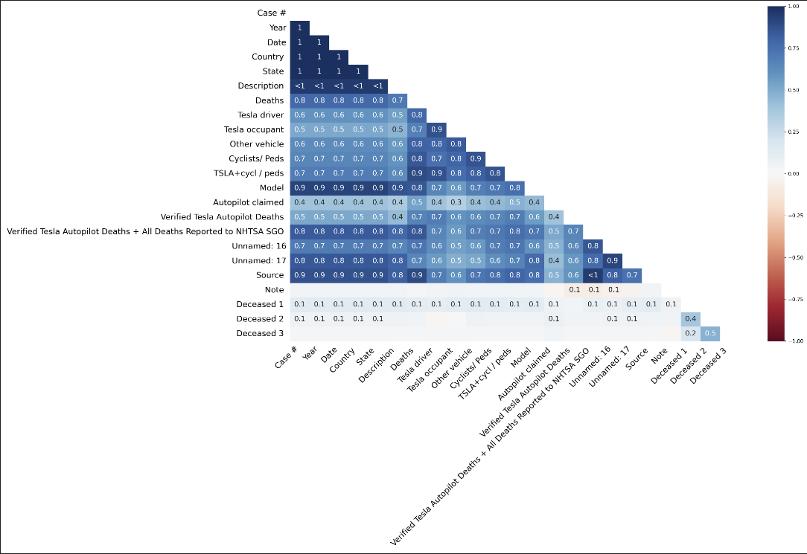
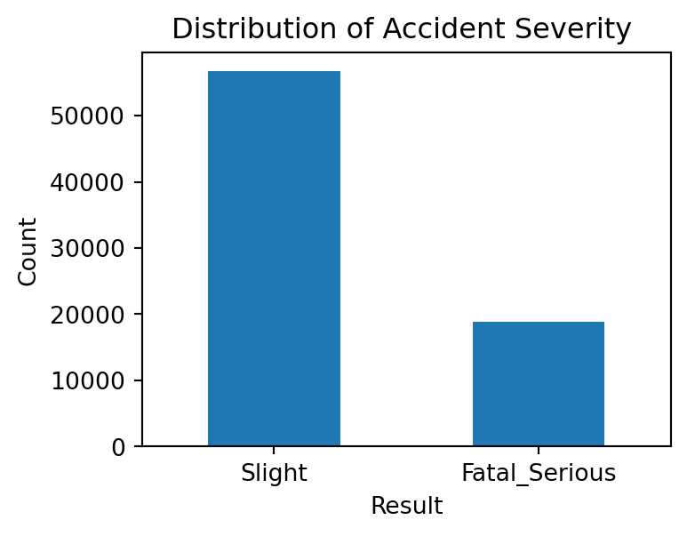
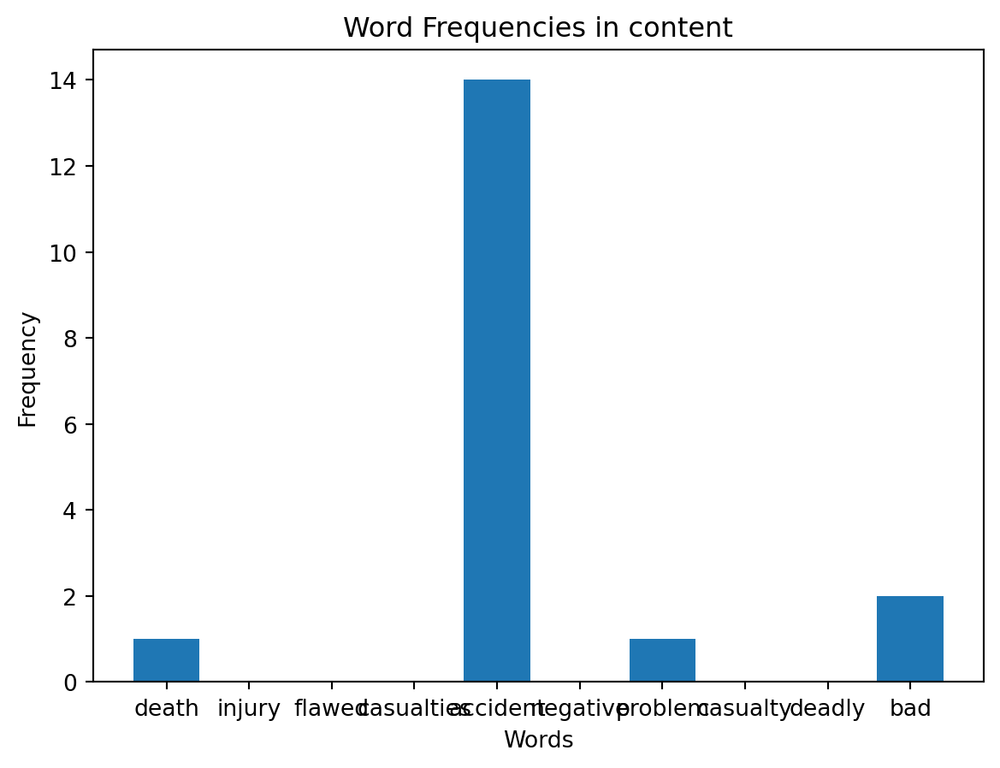
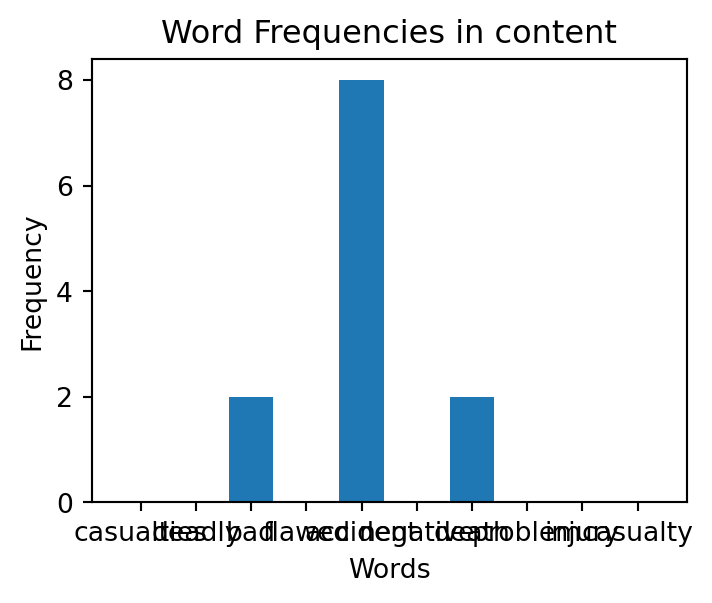

Code
import pandas as pd
import numpy as np
import missingno as msno
import matplotlib.pyplot as plt
import seaborn as sns
df = pd.read_csv("./Data/Tesla Deaths - Deaths.csv")
| Date | Country | State | Description | Deaths | Tesla driver | Tesla occupant | Other vehicle | Cyclists/ Peds | TSLA+cycl / peds | Model | Autopilot claimed | Verified Tesla Autopilot Deaths | |
|---|---|---|---|---|---|---|---|---|---|---|---|---|---|
| 0 | 1/17/2023 | USA | CA | Tesla crashes into back of semi | 1.0 | 1 | - | - | - | 1 | - | - | - |
| 1 | 1/7/2023 | Canada | - | Tesla crashes | 1.0 | 1 | - | - | - | 1 | - | - | - |
| 2 | 1/7/2023 | USA | WA | Tesla hits pole, catches on fire | 1.0 | - | 1 | - | - | 1 | - | - | - |
| 3 | 12/22/2022 | USA | GA | Tesla crashes and burns | 1.0 | 1 | - | - | - | 1 | - | - | - |
| 4 | 12/19/2022 | Canada | - | Tesla crashes into storefront | 1.0 | - | - | - | 1 | 1 | - | - | - |
| Date | Country | State | Description | Deaths | Tesla_driver | Tesla_occupant | Other_vehicle | CP | tsla+cp | Model | Claimed | VTAD | |
|---|---|---|---|---|---|---|---|---|---|---|---|---|---|
| 0 | 1/17/2023 | USA | CA | Tesla crashes into back of semi | 1.0 | 1 | - | - | - | 1 | - | - | - |
| 1 | 1/7/2023 | Canada | - | Tesla crashes | 1.0 | 1 | - | - | - | 1 | - | - | - |
| 2 | 1/7/2023 | USA | WA | Tesla hits pole, catches on fire | 1.0 | - | 1 | - | - | 1 | - | - | - |
| 3 | 12/22/2022 | USA | GA | Tesla crashes and burns | 1.0 | 1 | - | - | - | 1 | - | - | - |
| 4 | 12/19/2022 | Canada | - | Tesla crashes into storefront | 1.0 | - | - | - | 1 | 1 | - | - | - |
data = pd.read_csv('./Data/RoadAccident.csv')
column_datatypes = set()
for column in data.columns:
column_datatypes.add(str(data[column].dtype))
print("The dataset contains {} different data types and they are: {}".format(len(column_datatypes), ", ".join(column_datatypes)))
X = data.drop(columns='Accident_Severity')
y = data['Accident_Severity']
count = pd.value_counts(y, sort = True)
count.plot(kind = 'bar', rot=0)
plt.title("Distribution of Accident Severity ")
plt.xlabel("Result")
plt.ylabel("Count")The dataset contains 3 different data types and they are: int64, float64, objectText(0, 0.5, 'Count')
numerical_features = list()
categorical_features = list()
for column in X.columns:
# In the dataset we only have float and int64.
if (data[column].dtype == 'float64' or data[column].dtype == 'int64'):
numerical_features.append(column)
# Categorical
elif (data[column].dtype == 'object'):
categorical_features.append(column)
print('There are {} numerical features in the dataset.'.format(len(numerical_features)))There are 15 numerical features in the dataset.There are 17 categorical features in the dataset.
Unique values for each categorical column are:
Region 11
Urban_or_Rural_Area 2
X1st_Road_Class 6
Road_Type 5
Road_Surface_Conditions 5
Weather 6
High_Wind 2
Lights 4
Datetime 67926
Junction_Detail 8
Junction_Location 9
X1st_Point_of_Impact 5
Driver_Journey_Purpose 5
Propulsion_Code 2
Vehicle_Make 25
Vehicle_Category 6
Vehicle_Manoeuvre 11
dtype: int64df = pd.read_csv('./Data/newapiTesla.csv')
def count_word_frequencies(data_frame, column_name, target_words):
text = ' '.join(data_frame[column_name])
words = text.split()
word_counts = {word: words.count(word) for word in set(target_words)}
return word_counts
target_words = ['deadly', 'flawed', 'death', 'injury', 'casualty', 'accident', 'casualties', 'problem', 'bad', 'negative']
word_frequencies = count_word_frequencies(df, 'title', target_words)
for word, count in word_frequencies.items():
print(f"{word}: {count}")
plt.bar(word_frequencies.keys(), word_frequencies.values())
plt.xlabel('Words')
plt.ylabel('Frequency')
plt.title('Word Frequencies in title')
plt.show()casualties: 0
bad: 0
accident: 1
injury: 0
flawed: 1
negative: 0
deadly: 0
death: 1
problem: 0
casualty: 0
casualties: 0
bad: 2
accident: 8
injury: 0
flawed: 0
negative: 0
deadly: 0
death: 2
problem: 0
casualty: 0